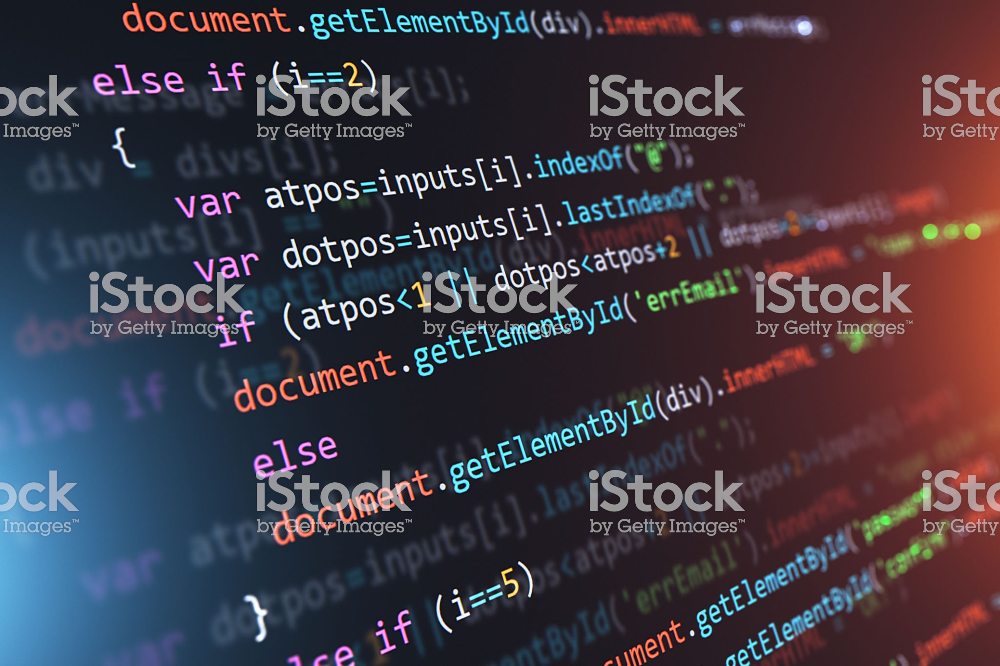

Trade involves the transfer of goods or services from one person or entity to another, often in exchange for money. A system or network that allows trade is called a market. An early form of trade, barter, saw the direct exchange of goods and services for other goods and services.[1][need quotation to verify] Barter involves trading things without the use of money.[1] Later, one bartering party started to involve precious metals, which gained symbolic as well as practical importance.[citation needed] Modern traders generally negotiate through a medium of exchange, such as money. As a result, buying can be separated from selling, or earning. The invention of money (and later credit, paper money and non-physical money) greatly simplified and promoted trade. Trade between two traders is called bilateral trade, while trade involving more than two traders is called multilateral trade.
